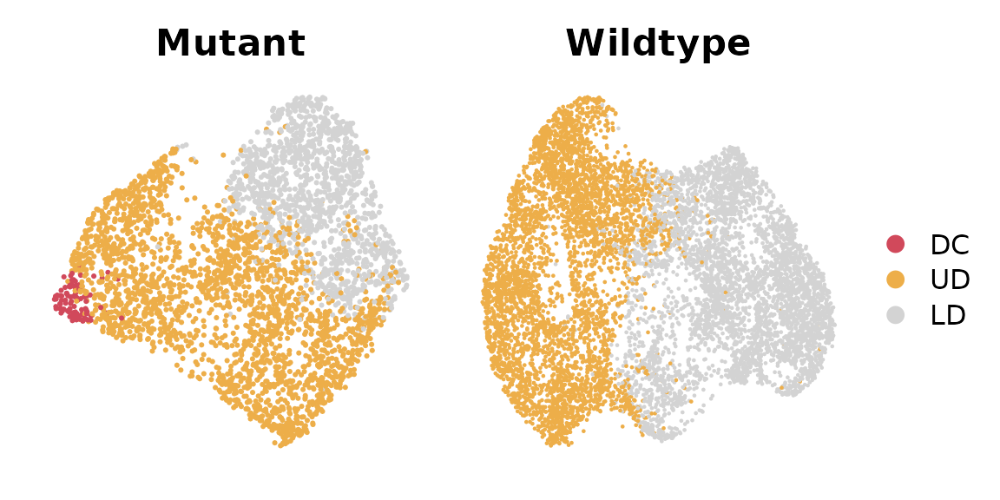
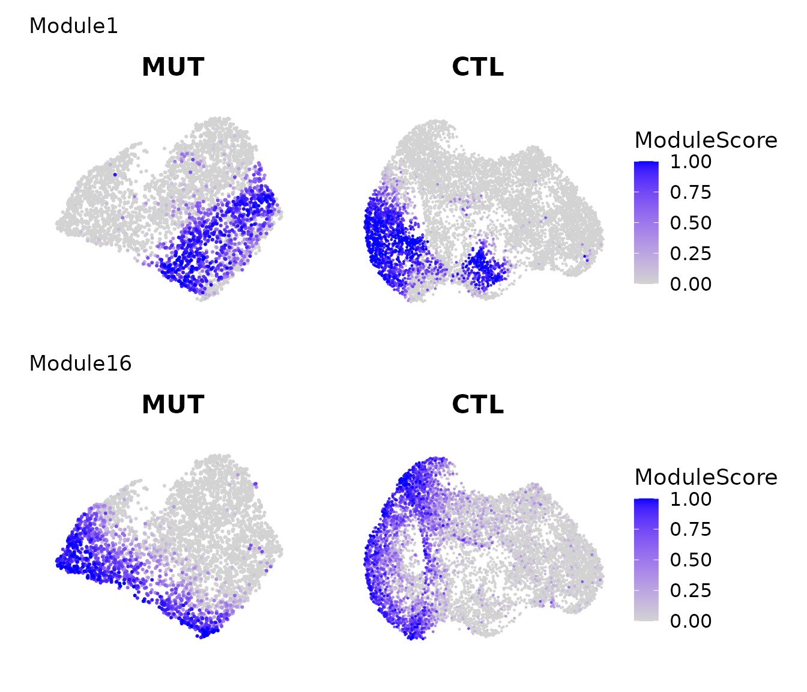
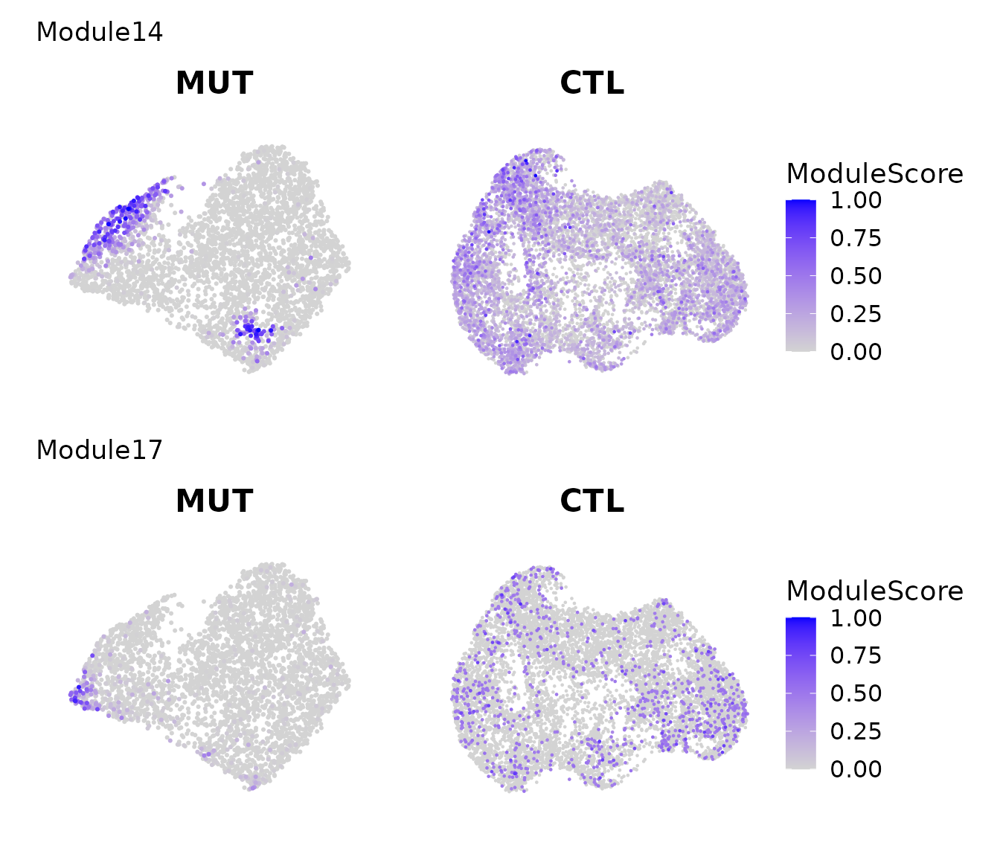

vignettes/LMD_cross_comparison_demo.Rmd
LMD_cross_comparison_demo.RmdOne of the downstream tasks for LMD is cross-sample comparison to identify sample-enriched or shared cell populations without the need for integration and differential abundance testing. Here we use a 10x mouse embryonic skin dataset. The processing step can be found here. The 10x data and processed Seurat data are available from the corresponding authors upon reasonable request.
##### Load required R libraries
library("LocalizedMarkerDetector")
library("ggplot2")
library("Seurat")
library("SeuratWrappers")
library("patchwork")This dataset includes a SmoM2 mutant sample with a paired wildtype sample, both collected at embryonic day 13.5. We can visualize these two samples using UMAP, with cells color-coded by cell types.
##### Load Data
dir.path0 = "~/" # Specify the directory path where the data is saved
data_S_MUT <- readRDS(file.path(dir.path0,"smom2/process_data/data_S_smom2_dermal_E13.5_MUT.rds"))
data_S_CTL <- readRDS(file.path(dir.path0,"smom2/process_data/data_S_smom2_dermal_E13.5_CTL.rds"))
p1 = DimPlot(data_S_MUT,
group.by = "celltype", shuffle = TRUE, cols = c("DC"="#d1495b", "UD" = "#edae49", "LD" = "#d3d3d3")) + ggtitle("Mutant") & NoAxes()
p2 = DimPlot(data_S_CTL,
group.by = "celltype", shuffle = TRUE, cols = c("DC"="#d1495b", "UD" = "#edae49", "LD" = "#d3d3d3")) + ggtitle("Wildtype") & NoAxes()
p1 + p2 + plot_layout(guides = "collect")
Next, we run LMD and identify gene modules on the mutant sample.
#### Prepare data
dat = as.matrix(data_S_MUT[["RNA"]]@data)
# Keep genes express > 10 cells and less than 50% of cells
Gene_detected_count <- apply(dat > apply(dat,2,median),1,sum)
selected_genes = names(Gene_detected_count)[(Gene_detected_count >= 10) & (Gene_detected_count <= ncol(dat) * 0.5)]
dat = dat[selected_genes,,drop = FALSE]
# Extract top 14 PCs (# of PC based on Elbow Plot)
feature_space = Embeddings(data_S_MUT[["pca"]])[,1:FindPC(data_S_MUT)]
##### RunLMD
lmd_score_res = LMD(dat, feature_space, max_time = 2^20)
#> Constructing KNN graph
#> Remove 0 genes which express in less than 5 cells
#> Calculate LMD score profile for large data...
#> Run doubly stochastic on affinity matrix...
#>
#> max diffusion time:2^ 10
res = show_result_lmd(lmd_score_res)
##### Identify Gene Modules
if(!"alra" %in% names(data_S_MUT@assays)){
data_S_MUT <- RunALRA(data_S_MUT, assay = "RNA")
DefaultAssay(data_S_MUT) <- "RNA"
}
dat_alra = as.matrix(data_S_MUT[["alra"]]@data)[names(res$cut_off_gene),]
dist = CalculateGeneDistance(dat_alra, method = "jaccard")
gene_partition = ClusterGenes(dist, clustering_method = "average", deepSplit = 2)
#> ..cutHeight not given, setting it to 0.986 ===> 99% of the (truncated) height range in dendro.
#> ..done.
#> Filtering out outlier genes in each module: 478 genes left.
levels(gene_partition) = 1:nlevels(gene_partition)
table(gene_partition)
#> gene_partition
#> 1 2 3 4 5 6 7 8 9 10 11 12 13 14 15 16 17 18 19 20
#> 24 16 65 18 10 16 12 26 19 16 39 15 37 40 16 26 21 29 11 22Next, we calculate the module activity score for each module in both the mutant and wildtype samples.
Note: This step is CPU-intensive and may take 4 to 5 minutes to complete.
data_S_MUT = AddModuleActivityScore(data_S_MUT, gene_partition = gene_partition)
#> Start Loop
data_S_CTL = AddModuleActivityScore(data_S_CTL, gene_partition = gene_partition)
#> Start LoopThen we can visualize the expression patterns of gene modules across both samples.
Here we show two modules that are localized in both mutant and wildtype.
library(ggplotify)
pl = lapply(c("Module1","Module16"), function(module_name){
pl = lapply(c("MUT","CTL"), function(i){
FeaturePlot(get(paste0("data_S_",i)), features = c(module_name), order = TRUE) + scale_color_gradient(low = "lightgrey", high = "blue", limits = c(0,1)) + ggtitle(i) & labs(color = "ModuleScore") & NoAxes()
})
p = as.ggplot(wrap_plots(pl, nrow = 1) + plot_layout(guides = "collect") + plot_annotation(title = module_name))
})
p = wrap_plots(pl,ncol = 1)
p
Here we show two modules that are only localized in mutant and dispersed in wildtype.
library(ggplotify)
pl = lapply(c("Module14","Module17"), function(module_name){
pl = lapply(c("MUT","CTL"), function(i){
FeaturePlot(get(paste0("data_S_",i)), features = c(module_name), order = TRUE) + scale_color_gradient(low = "lightgrey", high = "blue", limits = c(0,1)) + ggtitle(i) & labs(color = "ModuleScore") & NoAxes()
})
p = as.ggplot(wrap_plots(pl, nrow = 1) + plot_layout(guides = "collect") + plot_annotation(title = module_name))
})
p = wrap_plots(pl,ncol = 1)
p